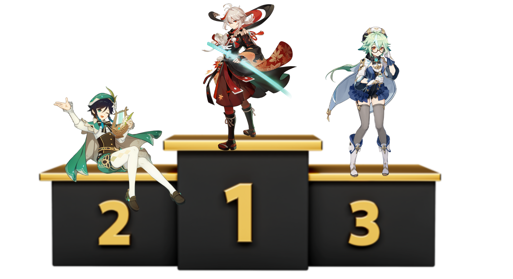
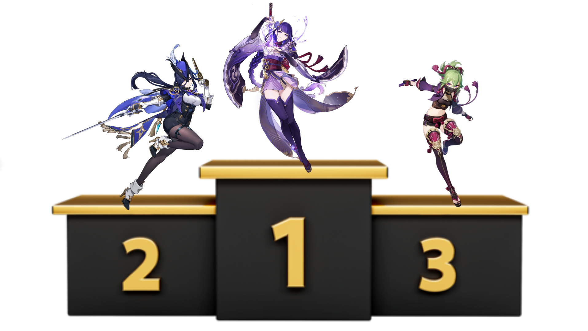
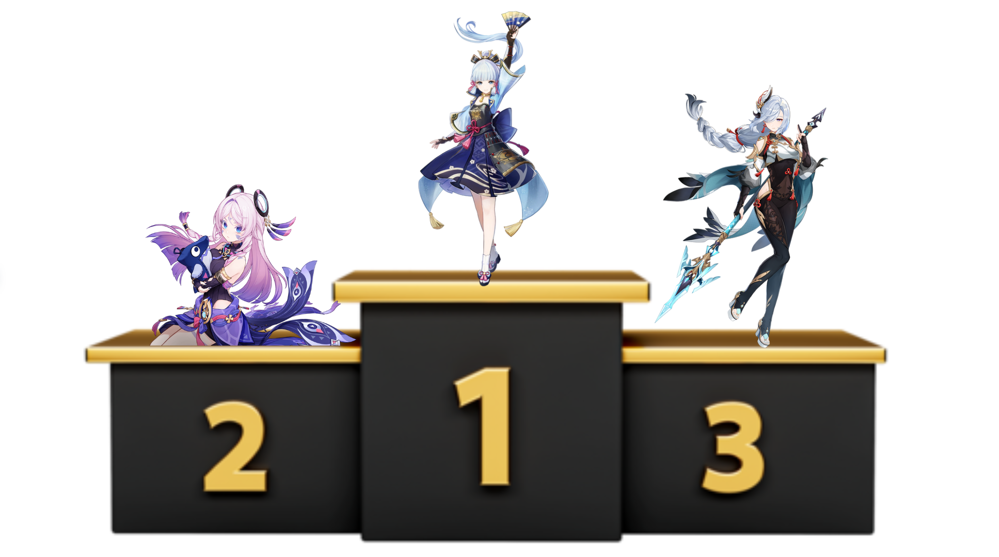
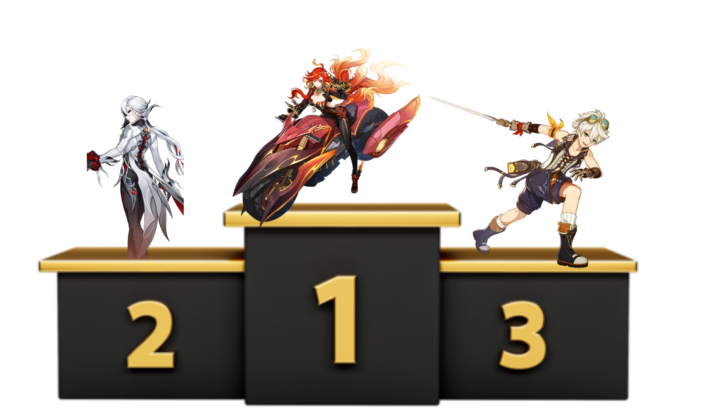
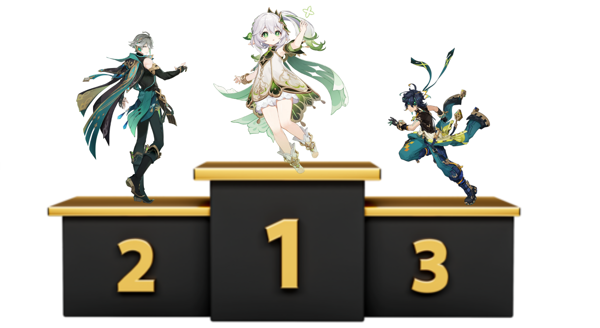
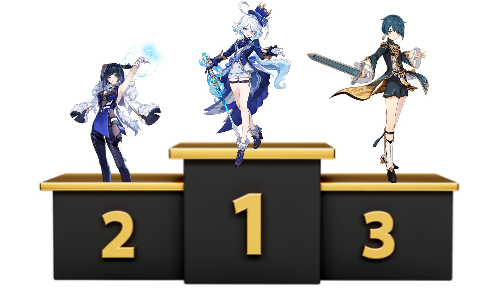

Top 3 Genshin Impact characters of each element
Anemo

- Kaedehara Kazuha
Amazing Buffing
,2nd Best CC In the Game
- Venti
- Sucrose
4 Star Kazuha,
Kit is very good
Geo

- Xilonen
- Zhongli
Best Shielder In The Game
- Navia
Best Geo DPS In The Game (OP's Itto)
Electro

- Raiden Shogun
Best Overall Electro Character
- Clorinde
- Kuki Shinobu
Best HyperBloom Support In The Game
Cryo

- Ayaka
- Citlali
- Shenhe
Best Dedicated Cryo Support
Pyro

- Mavuika
- Arlecchino
Best Sustained DPS In The Game
- Bennett
Best 4 Star To Ever Walk Teyvat
Dendro

- Nahida
Best Overall Dendro Character
- Alhathiumm
- Kinich
Hydro

- Furina
The Most Universal Character Out There
Can Be A Buffer, DPS, Healer, etc.
- Yelan
One Of The Best Bow Characters In The Game
Has Really Good Hydro Application
- Xingqiu
The Best Person To Use For Hydro Application
Works Well With Any Pyro DPS
| Honorable Mentions |
| Xiao |
Neuvillette |
Hu Tao |